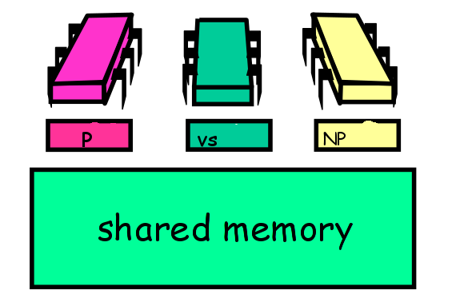
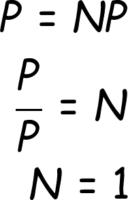

Concurrent Programming Presentation
Created by Ian Ker-Seymer / @ianks
P != NP
Maybe we can figure this out faster if we have more threads

Methodology
Results

After solving that, I figured I would move onto a harder problem.
Building a web server!
YARS: A multi-threaded, non-blocking web server and cache
github.com/ianks/yarsParalellization challenges
- We need to be able to accept an arbitrary number of clients.
- We want to make sure that reads and write from sockets do not block other threads from making progress.
- We need to have a threadsafe cache which threads will access to share see if a response has already been calculated.
Request Queue
We need to be able to accept and keep track of clients so that we can serve them later. Order matters, since we do not want to make some clients wait forever while others are served (fairness).
Frontend Workers
We have frontend (producer) threads which accept clients and put them on the queue.
class Frontend < Worker
def spawn
concurrency.times { @workers << start_worker }
@workers.each(&:join)
rescue => err
@server.logger.warn err.to_s
end
private
def start_worker
Thread.new { enter_work_loop }.tap do |t|
t.abort_on_exception = true
end
end
def enter_work_loop
loop { accept_clients }
end
def accept_clients
@server.clients << @server.backend.accept_nonblock
rescue IO::WaitReadable, Errno::EAGAIN
IO.select [@server.backend]
retry
rescue => err
@server.logger.warn err.to_s
end
end
Backend Workers
- Take clients from the queue
- Read from their socket
- Check to see if response is cached, if not, send the response back to the application and middleware for further processing
- Hash the response and store it in a lookup cache
class Backend < Worker
def post_initialize
@lookup_cache = ::Yars::AtomicCache.new
end
def spawn
concurrency.times do
worker = Thread.new do
loop do
begin
client = @server.clients.pop
serve client
rescue => err
@server.logger.warn err.to_s
ensure
client.close
end
end
end
@workers << worker.tap do |w|
w.abort_on_exception = true
end
end
end
def serve(client)
request = Request.new from: client
etag = request.etag
# If the response is cached, ship that
if @server.caching? && @lookup_cache[etag]
response = @lookup_cache[etag]
else
response = response_from_application env: request.parsed
end
ship response, to: client
# Cache the response
@lookup_cache[etag] = response if @server.caching?
end
private
def response_from_application(env:)
status, headers, body = @server.app.call env
Response.new status, headers, body
end
def ship(response, to:)
to.write_nonblock response.status
to.write_nonblock response.headers
to.write_nonblock response.body
rescue IO::WaitReadable, Errno::EAGAIN
IO.select [@to]
retry
end
end
A case for an Unbounded Signaling Queue
On one hand, we want to reduce the locking needed to access the Queue to increase performance.
On the other hand, we like the behavior of having threads sleep while they wait on a condition variable. This allows for the OS to schedule other tasks while there is little activity on the server.
Unbounded Signaling Queue: A Hybrid Approach
Since we really only need to signal backend workers when the state changes from empty to nonempty, we only use locks in the case that either the queue is empty, or the queue was empty, and no longer is.
In all other cases, we use atomic CAS operations to alter the list. In this case, we do not need locks at all.
Code for Push and Pop
def <<(data)
node = Node.new data: data
loop do
last = @tail.get
succ = begin
last.succ.get
rescue
nil
end
if last == @tail.get
if succ.nil?
if last.succ.compare_and_set succ, node
@tail.compare_and_set last, node
@mutex.synchronize { @not_empty.broadcast }
return node.data
end
else
@tail.compare_and_set last, succ
end
end
end
end
def pop
loop do
first = @head.get
last = @tail.get
succ = @head.get.succ.get
# Await until there is work to be done
if succ.nil?
@mutex.synchronize do
@not_empty.wait @mutex
next
end
end
if first == @head.get
if first == last
@tail.compare_and_set last, succ
else
return succ.data if @head.compare_and_set first, succ
end
end
end
end
A thread-safe cache
- Fine grain locking with resizeable locks array
- This allows for the cache to scale nicely because as the cache grows in size, we reduce the contentions on locks for each bin as the probability of an two items colliding in the locks array decreases.
A thread-safe cache
- Fine grain locking with resizeable locks array
- This allows for the cache to scale nicely because as the cache grows in size, we reduce the contentions on locks for each bin as the probability of an two items colliding in the locks array decreases.
def acquire(x)
me = Thread.current
loop do
who, mark = @owner.get
loop do
who, mark = @owner.get
end while mark && who != me
old_locks = @locks
old_lock = old_locks[index_of x, length: old_locks.length]
old_lock.lock
who, mark = @owner.get
return if (!mark || who == me) && @locks == old_locks
old_lock.unlock
end
end
Issues I faced when implementing the server
- Lack of Concurrency Primitives in Ruby
- Global Interpreter Lock
- Socket programming...
Lack of Concurrency
No AtomicMarkableReference, so I ended up sending in a patch to the concurrent-ruby library. Not having primitives is challenging as it makes implementing concurrent data structures impossible without some form of locking.
github.com/ruby-concurrency/concurrent-ruby/pull/281Global Interpreter Lock
Ruby, like other dynamic languages, has a GIL which only allows one line of code to be executed by the Interpreter at once.
Huge source of sequential bottlenecking. In my eyes, you essentially get all of the pains of conccurent programming without the benefits. Sigh.
Socket Programming...
Word of wisdom: never for the "Connection: close" HTTP 1.1 header...
Results
Unfortunately, not as signficant as I was hoping.
Why? Non-blocking IO and GIL
Non-blocking IO
Since we never had to wait on the Kernel to read the buffers from the sockets, the threads were never really IO bound.
GIL
For CPU bound tasks, we are unable to make use of multiple cores as the interpreter is a sequential bottleneck.

Despite the trials and tribulations
A lot was learned
- Use non-blocking IO from the start
- Never underestimate the power of concurrency primitives
- Always have tst coverage to make sure your application works under multi-threaded conditions